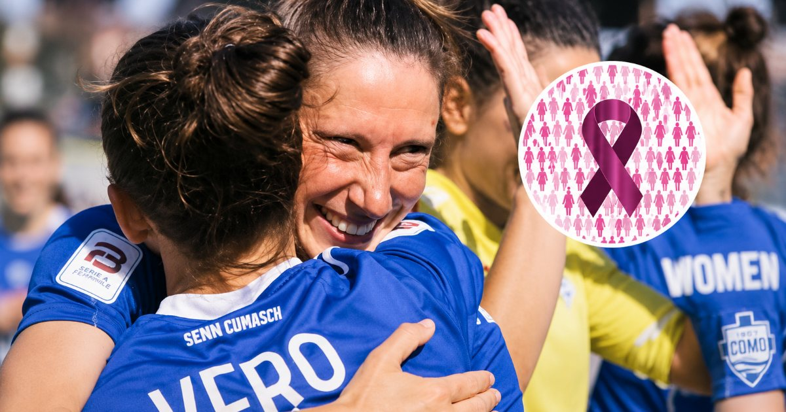
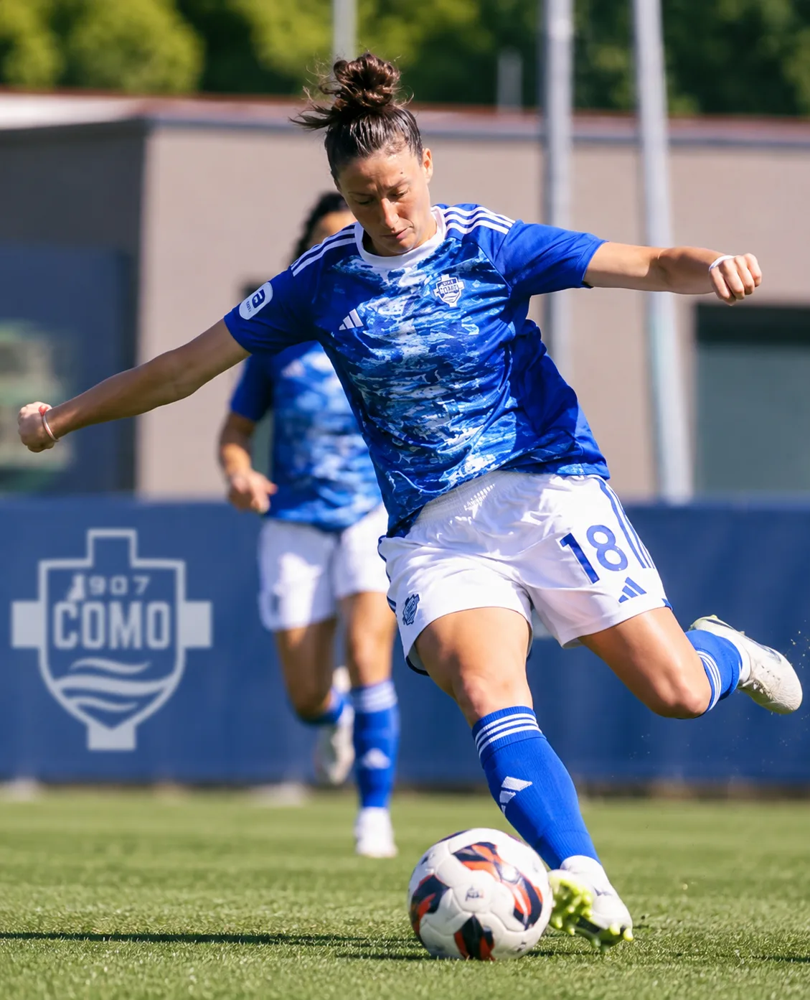

Como Women Renew Roberta Picchi's Contract After Breast Cancer Diagnosis
The Italian club says Picchi will be supported by its medical staff as she begins treatment and focuses on recovery.
By Jaziel Story · 3 min read · 2026-09-13

Como Women have renewed Roberta Picchi's contract through the end of the 2027/28 season after the 34-year-old forward was diagnosed with breast cancer. The club said its medical team will support her alongside the specialists overseeing her treatment and asked that Picchi's privacy be respected while she focuses on her recovery.
Como Puts Its Support Behind Picchi
Como 1907 confirmed that Picchi was diagnosed with breast cancer following a series of medical examinations. The club said she will now begin treatment with support from its medical staff, working alongside the specialists responsible for her care.
The decision to renew her contract through the end of the 2027/28 season gives Picchi continued support from the club as she steps away from football to concentrate on treatment and recovery.
Picchi was part of the Como Women squad that won Serie B and earned promotion to the top division.
A Player Who Helped Como Reach Serie A
Picchi, 34, was part of the Como Women squad that won Serie B last season and secured promotion to Italy's top division. Her contribution came during a landmark campaign for the women's team.
With Como preparing for its first season in Serie A, the club's decision means Picchi remains part of its plans beyond the immediate season, even as her priority is now her health and recovery.

Como Women have publicly backed Picchi and asked that her privacy be respected during treatment.Continue Reading →
Privacy and Recovery Come First
Como has asked supporters and the wider public to respect Picchi's privacy while she undergoes treatment. The club said it stands alongside Picchi and her family and will provide the support they need in the months ahead.
Picchi has responded with determination, expressing gratitude for the support around her and framing the challenge ahead as another match to face. For now, the focus remains on her treatment, recovery, and wellbeing.
Be strong and courageous. Do not be afraid; do not be discouraged, for the Lord your God will be with you wherever you go.
Joshua 1:9
For Roberta Picchi, the next chapter is about treatment, recovery, and taking one step at a time. Como's decision to stand by her beyond the current season sends a clear message that her place within the club extends beyond what happens on the pitch.